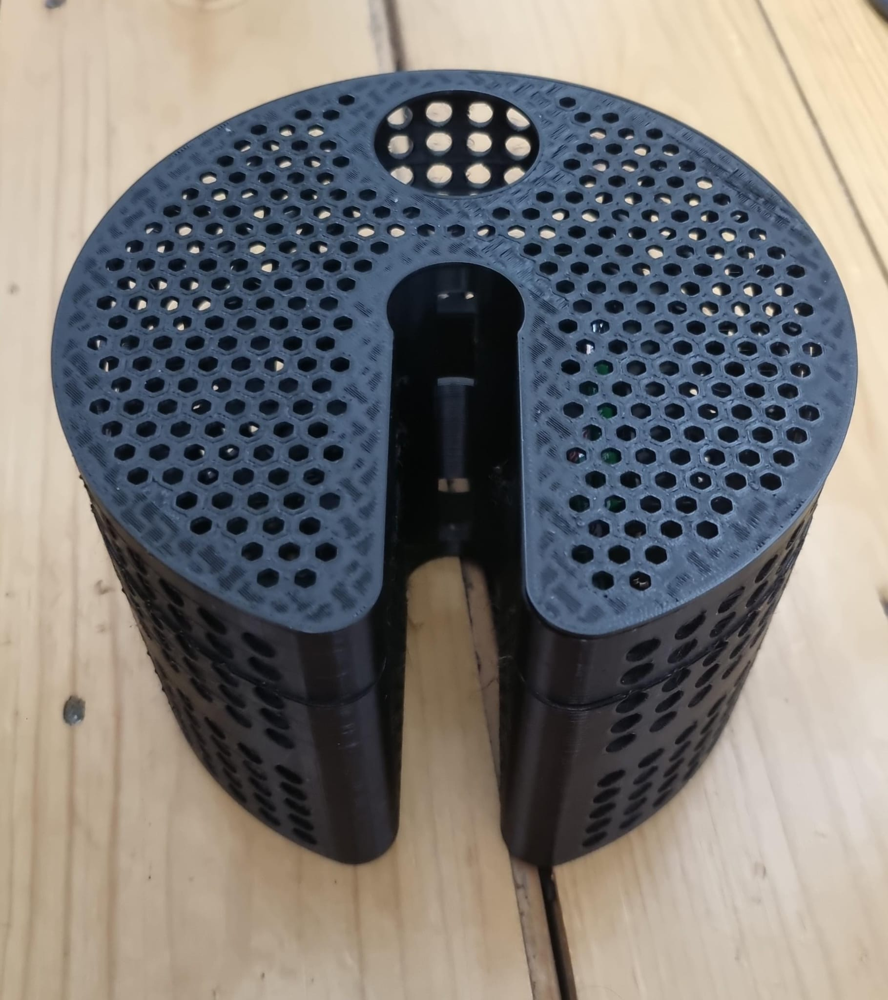
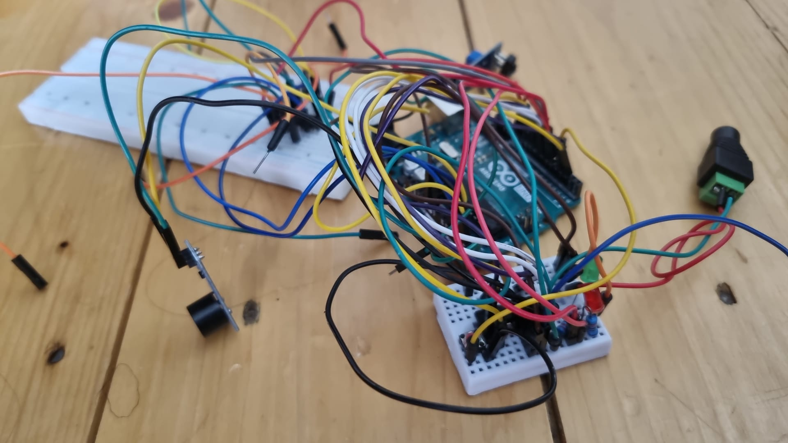

SIDESENSE (3B9 Design Project)
The challenge

For a third year module, we were separated by groups and tasked with designing and building a solution to a real-world problem, focusing on public transport problems.
After conducting several surveys, we decided that we would be focusing on producing a solution for that would improve the communication between bus drivers and cyclists.
My role and technical challenges
For this project, I was in charge of the documenting, presentation and any design-related tasks.
- My main task was the prototype development. I had to come up with materials and methods that would produce a faithful model while leaving enough space for the electronics and sensors to be attached and not interfere with the overall design.
- I was also in charge of documenting the progress, writing presentations, and creating the final video for the module, which would wrap up all the work done for the project.
The solution
m.

Outcome
f
For the next steps, the robot is projected to be fully assembled next week after finishing the last round of individual component testing, and the full assembly testing will begin next week, with a few weeks left for testing and refinement before the competition.
← Back to Portfolio